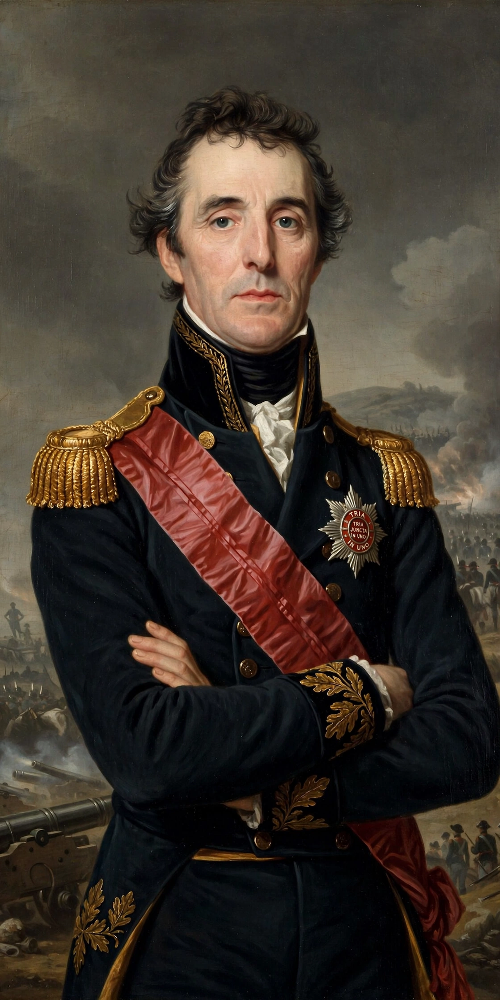

Arthur Wellesley, 1st Duke of Wellington
| Arthur Wellesley, 1st Duke of Wellington | |
|---|---|
| Born | 1 May 1769, Dublin, Ireland |
| Died | 14 September 1852 (aged 83), Walmer Castle, Kent |
| Known for | Victory at Waterloo (1815); commander in the Peninsular War; later Prime Minister (1828–30) |
| Nickname | The "Iron Duke" |
Arthur Wellesley, 1st Duke of Wellington (1769–1852), was an Anglo-Irish soldier and statesman who is one of the leading military and political figures of 19th-century Britain. He rose to prominence in India (victories at Assaye, 1803), then commanded the British and Portuguese armies through the Peninsular War (1808–14), driving the French out of Iberia and into France. On 18 June 1815, with the Prussians under Blücher marching to his aid, he defeated Napoleon at the Battle of Waterloo, ending the Hundred Days and the Napoleonic Wars.

Soldier and statesman
Wellington was a defensive master: careful of his soldiers' lives (though contemptuous of their character — "the scum of the earth", he called the rank and file, while making them the most reliable army in Europe), a peerless logistician, and cool under fire — at Waterloo he called the battle "the nearest-run thing you ever saw in your life". As a Tory statesman he served as Prime Minister (1828–30), conceding Catholic emancipation to avert civil war in Ireland, resisted parliamentary reform, and was for decades the establishment's pillar — the "Iron Duke" (a nickname from his political intransigence and the iron shutters he fitted at Apsley House against rioters). His state funeral in 1852 was among the grandest of the Victorian age; Wellington boots and beef Wellington carry his name into daily life.